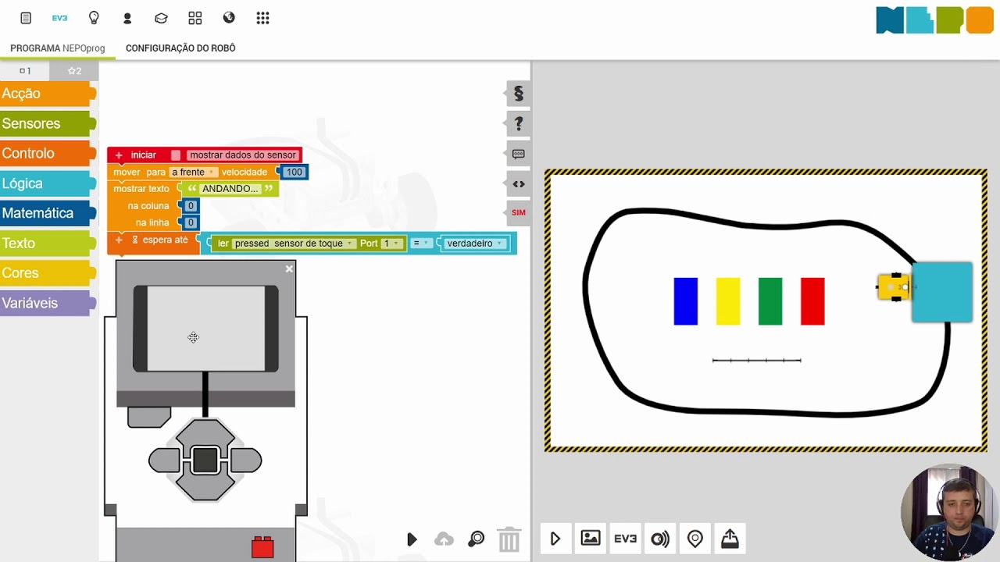

Open Roberta
Open Roberta é um projeto dentro da iniciativa educacional alemã "Roberta - Aprendizagem com robôs", iniciada por Fraunhofer IAIS, que é um instituto pertencente à Sociedade Fraunhofer, uma plataforma baseada em nuvem visando ajudar estudantes e professores a programar pequenos robôs feitos partir dos kits de hardware "LEGO Mindstorms", produzidos pela companhia homônima.
